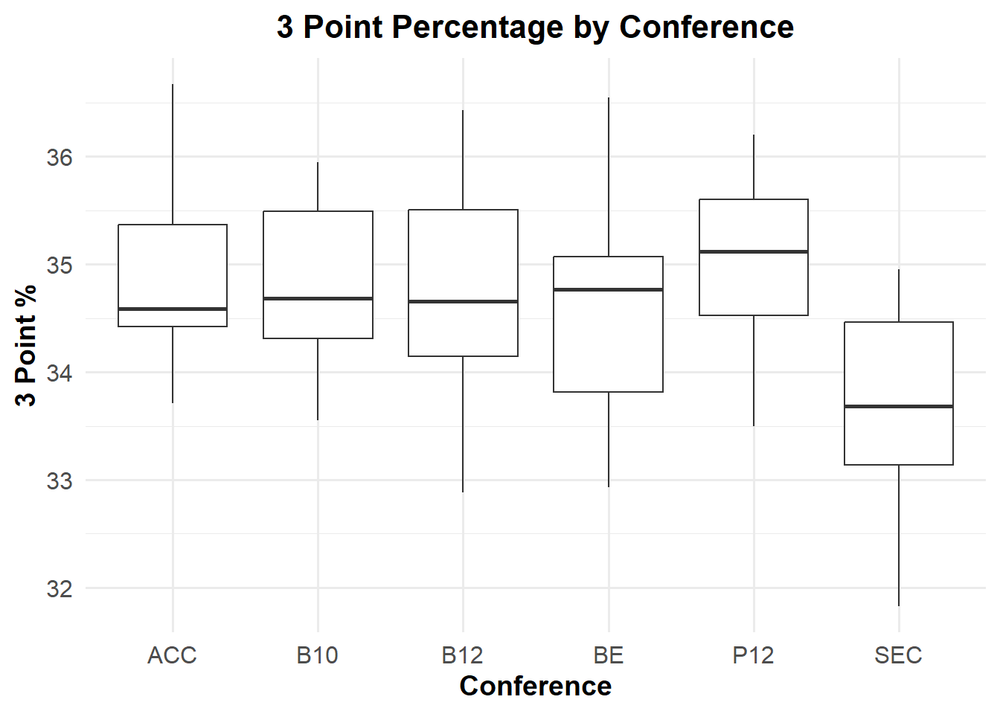
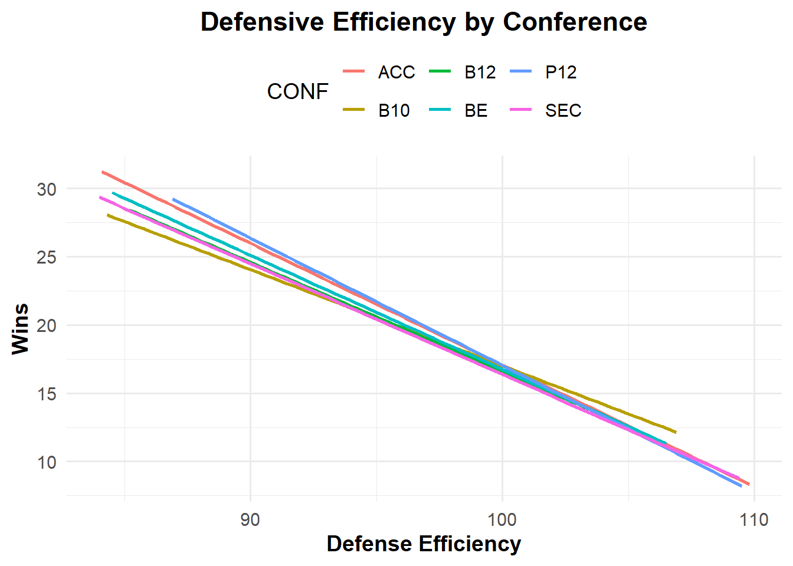
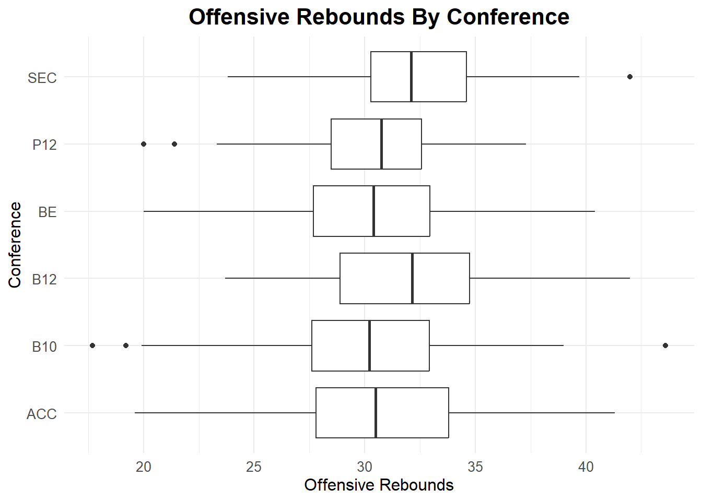

Within collegiate athletics, there are programs that have seen more success than others. Often, these elite teams are forged by playing against other elite teams, pointing to the importance of their respective conference, which we are using as a proxy variable for strength of schedule as a means of predicting success in March. This data visualization compares the relative success of all the conferences by highlighting their respective win percentages, helping us to see if we can find any outliers. It is clear that the Big Twelve has the highest win percentage, at over 60%, roughly five percent ahead of the next highest conference.
When analyzing the three point percentages on a conference level, we can see that there is a clear positive relationship between a team’s three point percentage and their total number of wins. We have chosen to inspect the top 6 conferences, because they have had the most success during March Madness in the past.
In tandem with the results of the previous page, we have the three point percentage of the 6 prior tournament champions, which were all above 35%. The mean value of the highest conference three-point percentage was found in the Pac 12. These findings point to higher three point percentages as being a good predictor of tournament success.

There is a clear negative relationship between a team’s total number of wins and their defensive efficiency, highlighting the fact that defensive teams do make it far in the tournament. As a reminder, defensive efficiency measures the amount of points a team allows per 100 possessions, so a lower value is better. Teams that prioritize offense (three point percentage, for example) as well as defense, will go further.

This plot shows the offensive rebounding trends across conferences. The Big Twelve Conference, on average, has the highest number of offensive rebounds, while also having the highest win percentage, pointing to a positive relationship between offensive rebounds and tournament success. In addition, the SEC has a high number of offensive rebounds, explaining how they are still able to compete at a high level despite having lower three point percentages. Offensive rebounds lead to more shot attempts for a team, giving them more opportunities to score.

Source Code
# Findings {.unnumbered}---execute: echo: false warning: false---```{r}library(readr)march_madness <-read_csv("538 Ratings.csv")library(readr)cbb <-read_csv("cbb.csv")``````{r}library(dplyr)library(tidyverse)``````{r} march_madness_new <- march_madness |>mutate(SEED =as.character(SEED))march_madness_new <- march_madness_new|>full_join(cbb)``````{r}CONF_win_perc <- march_madness_new |>group_by(CONF) |>summarise(total_games_played =sum(G, na.rm =TRUE),total_games_won =sum(W, na.rm =TRUE),win_percentage = total_games_won / total_games_played *100 )``` Within collegiate athletics, there are programs that have seen more success than others. Often, these elite teams are forged by playing against other elite teams, pointing to the importance of their respective conference, which we are using as a proxy variable for strength of schedule as a means of predicting success in March. This data visualization compares the relative success of all the conferences by highlighting their respective win percentages, helping us to see if we can find any outliers. It is clear that the Big Twelve has the highest win percentage, at over 60%, roughly five percent ahead of the next highest conference.```{r, fig.height=7}library(tidyverse)ggplot(CONF_win_perc, aes(x = fct_reorder(CONF, win_percentage), y = win_percentage, fill = win_percentage)) + geom_col() + coord_flip() + labs( title = "Win Percentage by Conference", x = "Conference", y = "Win Percentage (%)", fill = "Win Rate (%)" ) + scale_fill_gradient(low = "lightblue", high = "darkblue") + scale_y_continuous( limits = c(0, max(CONF_win_perc$win_percentage, na.rm = TRUE) + 5), breaks = seq(0, max(CONF_win_perc$win_percentage, na.rm = TRUE) + 5, by = 10), labels = scales::percent_format(scale = 1) ) + theme_minimal() + theme( plot.title = element_text( face = "bold", hjust = 0.5, size = 16 ), axis.text.y = element_text(size = 8), plot.margin = margin(10, 20, 10, 10), scale_x_continuous(expand = expansion(add = 20)) )``` When analyzing the three point percentages on a conference level, we can see that there is a clear positive relationship between a team’s three point percentage and their total number of wins. We have chosen to inspect the top 6 conferences, because they have had the most success during March Madness in the past. ```{r}march_madness_new |>filter(CONF %in%c("ACC", "B10", "B12", "SEC", "P12", "BE")) |>ggplot(aes(x =`3P_O`, y = W)) +geom_point() +geom_smooth(method ="lm", se =FALSE) +facet_wrap(~CONF) +labs(title ="3 Point % Impact on Wins",x ="3 Point %", y ="Number of Wins") +theme_minimal(base_size =14) +theme(strip.text =element_text(face ="bold", size =12), plot.title =element_text(face ="bold", size =16, hjust =0.5), plot.subtitle =element_text(hjust =0.5, size =12), axis.title =element_text(face ="bold"), panel.grid.major =element_line(color ="gray85", linetype ="dashed"), # Subtle grid linespanel.spacing =unit(1.2, "lines") )``` In tandem with the results of the previous page, we have the three point percentage of the 6 prior tournament champions, which were all above 35%. The mean value of the highest conference three-point percentage was found in the Pac 12. These findings point to higher three point percentages as being a good predictor of tournament success. ```{r}march_madness_new |>aggregate(`3P_O`~ CONF + YEAR, FUN = mean) |>filter(CONF %in%c("ACC", "B10", "B12", "SEC", "P12", "BE")) |># filter(YEAR == "2016") |>ggplot(aes(x = CONF, y =`3P_O`)) +geom_boxplot() +labs(title ="3 Point Percentage by Conference", x ="Conference",y ="3 Point %") +theme_minimal(base_size =14) +theme(plot.title =element_text(face ="bold", size =16, hjust =0.5),plot.subtitle =element_text(size =12, hjust =0.5, margin =margin(b =10)),axis.title =element_text(face ="bold"),axis.text =element_text(size =12)) panel.grid.minor =element_blank()``````{r}march_madness_new |>filter(ROUND =="1") |>group_by(TEAM) |>ggplot(aes(x = TEAM, y =`3P_O`)) +geom_point() +scale_y_continuous(expand =expansion(add =20)) +labs(title ="Champions 3 Point %") +theme_minimal() +theme(legend.position ="top", plot.title =element_text(face ="bold", hjust =0.5), plot.subtitle =element_text(hjust =0.5, size =12),axis.title =element_text(face ="bold") ) ``` There is a clear negative relationship between a team’s total number of wins and their defensive efficiency, highlighting the fact that defensive teams do make it far in the tournament. As a reminder, defensive efficiency measures the amount of points a team allows per 100 possessions, so a lower value is better. Teams that prioritize offense (three point percentage, for example) as well as defense, will go further. ```{r}march_madness_new |>filter(CONF %in%c("ACC", "B10", "B12", "SEC", "P12", "BE")) |>ggplot(aes (x = ADJDE, y = W, color = CONF)) +#geom_point() +geom_smooth(se =FALSE, method ="lm") +labs(title ="Defensive Efficiency by Conference", x ="Defense Efficiency", y ="Wins") +theme_minimal(base_size =14) +# Clean, modern theme with larger base font sizetheme(legend.position ="top", plot.title =element_text(face ="bold", hjust =0.5), plot.subtitle =element_text(hjust =0.5, size =12),axis.title =element_text(face ="bold") ) ``` This plot shows the offensive rebounding trends across conferences. The Big Twelve Conference, on average, has the highest number of offensive rebounds, while also having the highest win percentage, pointing to a positive relationship between offensive rebounds and tournament success. In addition, the SEC has a high number of offensive rebounds, explaining how they are still able to compete at a high level despite having lower three point percentages. Offensive rebounds lead to more shot attempts for a team, giving them more opportunities to score. ```{r}march_madness_new |>filter(CONF %in%c("ACC", "B10", "B12", "SEC", "P12", "BE")) |>ggplot(aes(x = CONF, y = ORB)) +geom_boxplot() +labs(title ="Offensive Rebounds By Conference", x ="Conference", y ="Offensive Rebounds") +scale_fill_brewer(palette ="Set3") +theme_minimal() +theme(plot.title =element_text(size =16, face ="bold", hjust =0.5), # Style titleplot.subtitle =element_text(size =12, hjust =0.5), # Style subtitleaxis.text =element_text(size =10),axis.title =element_text(size =12),legend.position ="none"# Remove redundant legend ) +coord_flip()#This plot helps explain the strong paint presence in the SEC, showing why they are still able to compete at a high level in March Madness despite lower 3 point percentages. ```